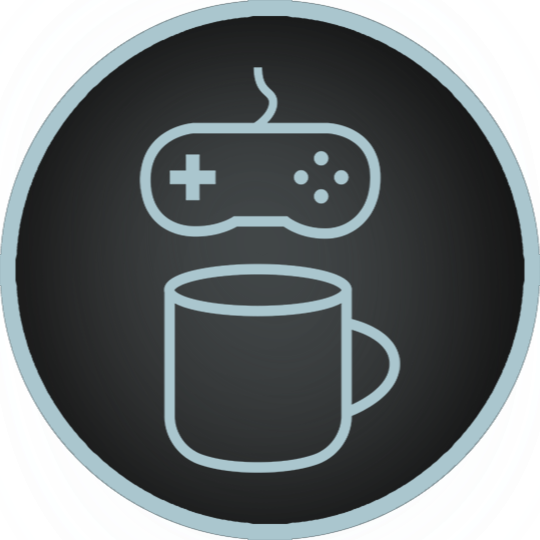

Games Over Coffee Hub
Empathy-focused Game Design
Games Over Coffee
Consulting
Most Recent Episode
Loading Latest Episode...
Please wait while the latest episode details are loaded.
Watch Now
Games Over Coffee Videos
×
View Source Video
×
View on YouTube